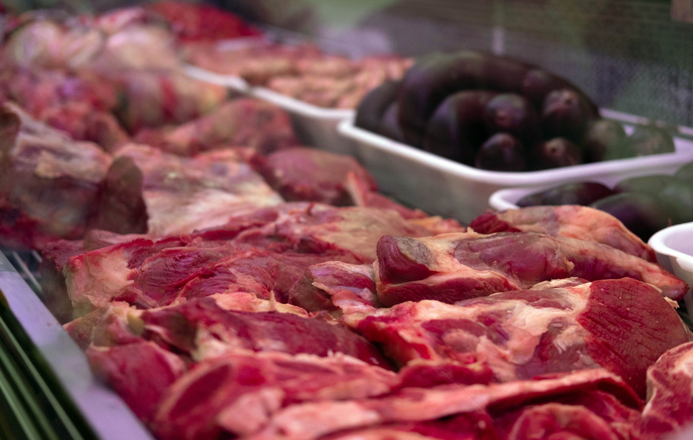

Carne para tu casa.
Abastecimiento para tu negocio.
Carne vacuna, cerdo, pollo, milanesas y productos para parrilla. Encontrá lo que buscás y consultá precios y disponibilidad.
Productos para cada ocasión
Cortes y opciones para la cocina diaria, el asado y las compras para tu negocio. Consultá qué hay disponible.


La variedad y el stock pueden cambiar según el día y la sucursal.
Consultar disponibilidad
Los cortes más pedidos en Don Silvio
Si el asado del domingo, la milanesa de todos los días o el abastecimiento de tu carnicería dependen de tener la carne justa, acá comprás directo del frigorífico, sin intermediarios.
Para la parrilla
Asado de tira, vacío, bife de chorizo, entraña, matambre y ojo de bife.
Para milanesas
Nalga y bola de lomo: dos clásicos para resolver la comida de todos los días.
También encontrás cerdo, pollo, milanesas listas para cocinar y productos para parrilla: todo en un mismo lugar, según la disponibilidad del día.
Atendemos en San Justo (La Matanza) y Libertad / Merlo, zona oeste, con venta minorista y mayorista. Escribinos y te orientamos sobre qué hay disponible hoy.


Quiénes somos
La escala de un mayorista, el control de una planta de exportación.
En Frigorífico Don Silvio nos dedicamos a la comercialización y producción de carne vacuna, pollo y cerdo. Abastecemos a carnicerías, parrillas, restaurantes y hogares de Gran Buenos Aires y CABA, con atención directa y la posibilidad de comprar desde la planta, según la modalidad de compra.
Para tu negocio
Consultá por media res de ternera o novillito y la posibilidad de desposte y fileteado corte por corte, según tus preferencias. Pedí la lista mayorista para conocer formatos, disponibilidad y condiciones vigentes.
Para tu casa
Encontrá cortes de carne vacuna y cerdo como asado, vacío, lomo, matambre, bondiola y pechito, además de milanesas de ternera y pollo listas para cocinar, según disponibilidad.
Calidad, inocuidad y trazabilidad
Según la información compartida por la empresa, los procesos BPM, SSOP, HACCP y QUACP acompañan el trabajo de planta tanto en compras minoristas como mayoristas. Consultanos por su alcance y documentación vigentes.
Consultar por WhatsApp- BPM
- Buenas Prácticas de Manufactura para la higiene del entorno y del equipo de trabajo.
- SSOP
- Procedimientos de saneamiento y limpieza de las áreas de producción.
- HACCP
- Análisis de peligros y seguimiento de puntos críticos durante el proceso.
- QUACP
- Control de calidad de la materia prima que ingresa y del producto terminado.


¿Buscás un corte, una oferta o comprar en cantidad?
Los precios y las promociones cambian. Escribinos para consultar lo disponible hoy y encontrar una opción para vos.
Preguntar por WhatsAppEncontrá tu sucursal
San Justo y Libertad / Merlo, en el oeste del Gran Buenos Aires.
La Matanza
San Justo
Av. Pres. Dr. Arturo Umberto Illia 2932San Justo, Buenos Aires
Horario publicado Lun. a sáb. 08:00 a 20:00 Dom. 08:00 a 13:00
Zona oeste
Libertad / Merlo
José Miró 1862Libertad, Merlo, Buenos Aires
Horario publicado Lun. a sáb. 08:00 a 20:00 Dom. 08:00 a 13:00
Direcciones y horarios tomados de la información publicada. Confirmá por WhatsApp posibles cambios y horarios de feriados.
¿Venden al público?
Sí, la información publicada presenta venta minorista en las sucursales. Consultá disponibilidad antes de acercarte.
¿También venden por mayor?
Se comunica venta mayorista para carnicerías, revendedores y gastronomía. Consultá la lista, los formatos y las condiciones vigentes.
¿Qué productos tienen?
Carne vacuna, cerdo, pollo, milanesas, achuras y productos para parrilla, según disponibilidad de cada sucursal.
¿Hay ofertas y precios por cantidad?
Consultá por WhatsApp los precios, promociones y formatos disponibles al momento de tu compra.
¿Hacen envíos?
La información disponible no confirma una modalidad vigente de envíos. Consultá directamente por WhatsApp.